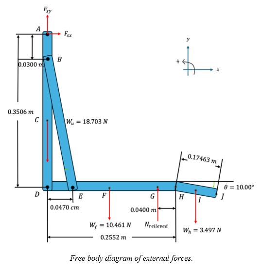
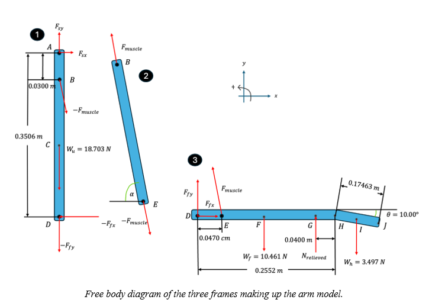
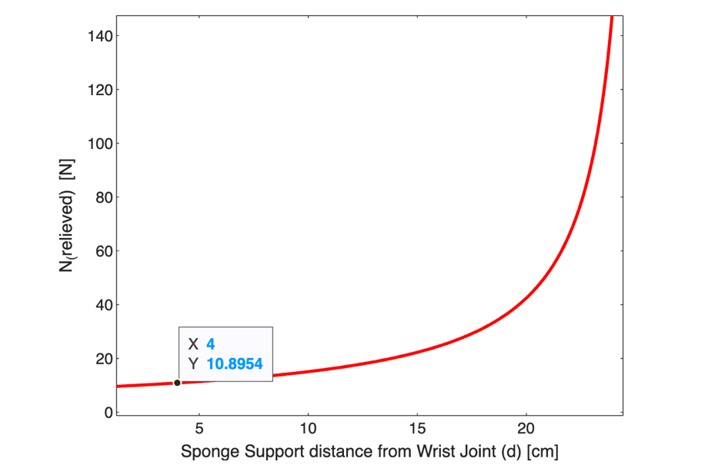

Individuals with cerebral palsy (CP) struggle to control their hands and arms for precise movements. Playing the piano as physical therapy can help improve these skills. However, weak upper body muscles in CP patients make it difficult.
To solve this issue, we designed a device to make piano-focused physical therapy possible for people with CP. It features sliding arm supports attached to a railing to hold up the user’s arms. This reduces the effort needed to keep the arms raised while playing, allowing users to focus on hand and finger movement.

We tested the device with six participants to determine how device distance affected user comfort. Most participants concluded that the device was most comfortable when placed further from the piano and all participants reported that the device was supportive and easy to use. However, some participants said that the device made playing the piano more difficult.
We plan to improve the device by increasing the range of motion in the arm supports and reducing friction in the sliding rails. These improvements will help make piano therapy a better option for people with CP, allowing them to enjoy music while improving their hand and arm movements.

Our Goal
We wanted to design an assistive device for bilateral spastic cerebral palsy patients to make piano playing, as a means of physical therapy, accessible. The device aims to reduce strain on the shoulder muscles required to lift the arms to play piano, in turn allowing users to engage in physical therapy to improve hand function and dexterity. The device should be easy to use and set up, comfortable to use, and durable.
Project Context
 Cerebral palsy (CP) is a disability affecting movement and muscle tone caused by abnormal development or damage to the motor control sections in the brain before birth or during infancy. It affects 0.3% of live births [1]. Our problem space focuses on people with bilateral spastic cerebral palsy, meaning the disability affects both sides of the patient's body.
Cerebral palsy (CP) is a disability affecting movement and muscle tone caused by abnormal development or damage to the motor control sections in the brain before birth or during infancy. It affects 0.3% of live births [1]. Our problem space focuses on people with bilateral spastic cerebral palsy, meaning the disability affects both sides of the patient's body.
Children with CP may exhibit weaker shoulder abductor muscles than healthy children [2], which may make lifting the arms away from the body for actions like playing piano difficult [3]. In the same study, these patients were also found to have weaker wrist extensor muscles, which stretch the fingers out [2]. Additionally, CP patients exhibit weaker gross manual dexterity, fine finger mobility, and sensory deficits which greatly affect their manual abilities [4].
To aid in these deficits, physical therapy is often used to enhance dexterity, coordination, and strength [5]. One form of physical therapy is neuromuscular music therapy, where music can be used in conjunction with traditional physical therapy to produce a noticeable improvement in hand, arm, and fine motor skills [6]. Meanwhile, piano playing requires many hand skills, including fine motor skills and requires activation of the finger and wrist extensor muscles [7]
Therefore, the requirements of piano playing include the areas of development for CP patients, showing a possibility of its use as physical therapy. For artifacts, braces and walkers are existing orthotic devices to support the muscles and strengthen mobility in CP patients [8], giving inspiration for an angle from which the group could approach our problem space.
Key criteria and constraints for our device include ease and comfort in use and set up, and its durability, but also many other factors. Ease and comfort in use is a key criterion for stakeholders, including being able to accommodate a variety of patients with CP who may have similar, but diverse needs and physiology. Ways to address this criterion include making the design intuitive to set up and use, and making the device adjustable so a variety of stakeholders with different physiologies may be comfortable while using it.
Given that this device is for facilitating physiotherapy in the form of piano playing, we may be constrained by the number of physiotherapists with piano knowledge to facilitate the physiotherapy. Similarly, the device must be easy to set up and integrate into a physiotherapy routine and enhance it rather than cause more troubles. However, we are constrained by the fact that given the size of a piano, adding a device to it may make it difficult to set up and take down, and impact portability.

To address the comfort criteria, the device should be made from materials that are comfortable and adjustable to the user. At the same time, the device should be durable and capable of being repaired and withstanding the forces that would be applied to it. These criteria are constrained by the financial and availability of resources, such as piano types and environments, to the design team throughout the whole design process, meaning that every desire in the device may not be fulfilled.
Fulfilling these functions, criteria, and constraints was the reason we selected the rail design to prototype.
Prototype
Our prototype is a system with two arm supports which slide on tracks. We made the arm supports out of sponges which had cutouts for the user’s wrists and forearms. We chose sponges because they provide sufficient cushioning while being comfortable on the skin. It also allowed the sides of the cutout to be flexible without ripping, allowing it to be used by individuals with many different sizes of wrists and forearms. These were glued to pieces of poster board then glued to the toy cars to connect the arm support subsystem to the moving subsystem. The moving subsystem was toy car tracks with poster board glued to it, to ensure that the car could move smoothly over it. This also ensured that the tracks stayed straight since they were designed to bend.
Our first iteration used cars which had an inner gear that powered an external light. This caused excess unwanted friction, so we cut the outer gear to stop it from turning the inner gear. Once we completed this step, the wheels were virtually frictionless. We then nailed the tracks to a 2” x 4” wooden plank to further ensure that the tracks stayed straight and to raise the whole system. The wood was the perfect height to encourage good posture and comfort for the user.
Engineering Analysis
The criteria chosen for engineering analysis is “Max load to be relieved”. This load refers to the reduction of the force experienced by the upper arm muscles, the shoulder joint, and the elbow joint. Since our stakeholders are CP patients with weak upper body muscle strength, their upper arm muscles oftentimes are not physically capable of fully counteracting the weight of their arms (i.e., unable to lift arm for extended periods of time), and as such, they need a support to reduce the tension in the arm muscles and joints. Therefore, knowing the magnitude of the relieved load addresses this major stakeholder need, hence analyzing this chosen criterion is of particular importance. Additionally, successfully calculating a max relieved load enables an objective analysis regarding device effectiveness and practicality.
Analysis Approach
To complete the analysis, a simplified model of the human arm and hand in the piano-playing position will be used (see Figure 4 and 5 for the free body diagram). The model approximates the human arm as a simple frame containing three free body diagrams (FBD): one for the upper arm, the forearm and hand, and one for the upper arm muscle connecting the forearm and the upper arm. 2D equilibrium will be applied to the various FBDs to determine the load relieved, the force experienced by the muscles, and the shoulder joint and elbow joint reaction forces.
Anatomical Data
Upper arm length =AD=0.3506 [m], forearm length =DH=0.2552 [m], hand length =HJ=0.17463 [m], upper arm mass =1.0664 [kg], forearm mass =1.9065 [kg], hand mass =0.3565 [kg], angle of depression of hand =θ=10.00°, distance from the centroid of the sponge wrist support to the wrist joint =HI=0.0400 [m], the distance between the muscle attachment point to the upper arm bone and the shoulder joint =AB=0.0300 [m], forearm centroid has length DF= (x_f ) ̅ from point D, hand centroid has length HI= (x_h ) ̅ from point H, and according to a study of elbow muscles, distance from the elbow joint to the forearm muscle attachment point =DE=0.0470 [m] [12].
Desired Results
The normal contact force, N_relieved, that the sponge support acts onto the forearm. The force the shoulder joint experiences, F_s when in the piano-playing position. The reaction force in the elbow, F_f and the muscle tension, F_muscle. Assumptions and approximations in the model: The force due to gravity, g, is g=-9.81 [〖ms〗^(-2)] and the entire arm is a rigid body. There are no frictional forces in the wrist and finger joints. The muscle force represented in the FBD is the only muscle force acting on the arm. The centroid of the upper arm, forearm, and hand is accurately represented. The weight of the accounted muscle member in the FBD is negligible. The distance from the muscle attachment point on the upper arm to the shoulder joint is 3.00 [cm]. Also, the angle of depression of the hand during piano play is θ=10.00°. The forearm and upper arm are perpendicular to one another. The straight-line path between the elbow and shoulder joint is parallel to the y-axis.
Free Body Diagrams
 Conclusion and Interpretation of Results
The force relieved from the arm muscles and joints when using our railing device is 10.90 [N], leaving the shoulder joint and elbow joint to experience 21.8 [N] and 3.04 [N] of force respectively. On the other hand, the upper arm muscles experience no tension forces while using this device. To objectively measure the effectiveness of the railing device, we must compare the forces the joints and muscles experience while the stakeholder is using the device to an identical scenario where the stakeholder is not. In the device’s absence, it is calculated that the force the shoulder joint and elbow joint experiences increases to 32.7 [N] and -35.9 [N] respectively, while muscle force tension increases from 0 [N] to 50.4 [N]. In other words, the device reduces shoulder strain by 50%, reduces elbow strain by nearly 12 times, and ensures the upper arm muscles experience no forces. Therefore, it is sufficient to say that the railing device does indeed reduce muscle and joint strain by an adequate amount to be considered effective.
The load relieved off the arm for different sponge support distances measured from the wrist joint. The point (4, 10.8954) indicates the load relieved is 10.90 [N] when the sponge support is 4.00 [cm] from the wrist joint. This force value aligns with the calculated.